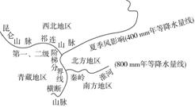
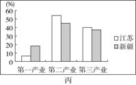

必修三第1章测试
幻灯片切换效果
None - Fade - Slide - Convex - Concave - Zoom
选择班级
幻灯片样式
Black (default) -
White -
League -
Sky -
Beige -
Simple
Serif -
Blood -
Night -
Moon -
Solarized
读图，完成1、2题。
1．①②两地的地理环境差异是( )
A．①地为温带大陆性气候，②地为亚热带季风气候
B．①地土壤肥沃，②地土壤贫瘠
C．①地不能发展水稻种植业，②地水稻种植业发达
D．①地石油资源丰富，②地矿产资源贫乏
解析 第1题，由图可知，①地为松嫩平原，②地为长江三角洲；①地为大陆性稍强的温带季风气候，②地为亚热带季风气候；①地的黑土和②地的水稻土都是生产力较高的肥沃土壤；①②两地都可以发展水稻种植业。
2．①②两地的区域发展方向是( )
A．①地发展成为综合性工业基地
B．①地利用交通条件发展商贸业
C．②地利用交通条件发展商贸业
D．②地侧重发展轻工业
第2题，①地利用当地石油资源和周边煤、铁等资源，发展成为我国重要的重化工业基地；①地西部降水较少，草原广布，适宜发展畜牧业。②地交通便捷，内外联系方便，商贸发达；②地利用当地发达的农业基础和国内外矿产资源，发展成为综合性工业基地。
读我国四大区域示意图，回答3、4题。 3．我国耕地面积北方大于南方，而单位面积产量北方低于南方，主要原因是北方( )
A．水热资源条件差
B．人均耕地少
C．土壤贫瘠
D．科技水平低
解析 第3题，北方人均耕地多、土壤肥沃，科技水平与南方不相上下。北方单位面积产量低于南方的主要原因是该地区纬度高，水热资源条件差。
4．青藏地区因地制宜解决农村生活能源问题的最现实途径是( )
A．开发太阳能
B．开采小煤矿
C．发展沼气
D．种植薪炭林
第4题，青藏地区煤炭资源匮乏，且地势高、晴天多、太阳能资源丰富，可以利用太阳能解决能源问题；高原地区由于气温低，不利于发展沼气。
读图，回答第5题。
5．四个大洲中( )
A．甲地形复杂多样，中低产田多，农业生产
技术落后
B．乙平原广，高纬地区受寒流影响强，港口封冻期长
C．丙纬度跨度大，地形中部高四周低，是水稻主产区
D．丁为高原大陆，人口自然增长率低，城市化水平高
读图可知，甲大洲位于北半球，纬度为7°N～72°N，且有部分陆地位于北极圈以北，则该大洲为北美洲；乙大洲位于北半球，纬度为36°N～71°N，无热带区域，且平原面积所占的比例接近60%，则该大洲为欧洲；丙大洲跨南北半球，但主要位于北半球，且有部分陆地位于北极圈以北，则该大洲为亚洲；丁大洲跨南北半球，且分布于南北半球的纬度范围相当，则该大洲为非洲。地处北美洲的美国和加拿大属于发达国家，农业生产水平高，农业生产技术先进，A项错误；欧洲高纬地区受北大西洋暖流影响，港口封冻期短，B项错误；亚洲纬度跨度大，地形中部(青藏高原)高四周低，东亚、东南亚、南亚是水稻主产区，C项正确；非洲为高原大陆，是人口自然增长率最高的大洲，经济落后，工农业生产水平低，城市化水平低，D项错误。
小明一家计划到某大型风景区旅游，为方便选择旅游地点，小明利用地理信息系统将区内观光资源分层显示如下图所示。据此回答6～8题。
6．小明发现湖泊、森林区和住宿区等一系列图片都是最新动态监测的结果，专业部门获取上述图片最便捷的技术是( )
A．野外测量
B．扫描旅游地图
C．遥感技术
D．全球定位系统
解析 第6题，该风景区是大型风景区，运用遥感技术可以迅速获取较大范围的区域信息和实时动态监测。
7．森林区内的住宿区是( )
A．①
B．②
C．③
D．④
第7题，将森林区和住宿区的图片相叠加，找出森林区和住宿区重叠的部分即可(如下图所示)。
8．为了走最便捷的路线去风景游览区，小明的父亲在驾驶轿车过程中，应充分运用( )
A．旅游交通图
B．地理信息系统
C．遥感技术
D．全球定位系统
第8题，车载全球定位系统能实时提供导航信息，用户可及时查看车辆的运行轨迹、速度、行进方向等。
(2019·湖南重点中学高二期末)下表是2017年我国部分地区小麦的收割开始时间表，读表完成9、10题。
9.四地小麦收割开始时间不同的主要影响因素是( )
A．降水量
B．纬度
C．地形
D．劳动力数量
解析 第9题，表中四地小麦收割开始时间不同，是由于小麦成熟时间有早有晚，这与四地的气温、热量有关，也就是说纬度位置不同影响了四地小麦收割开始时间。
10．农业部门调查全国小麦播种面积和生长状况，应用的地理信息技术是( )
A．GIS
B．GPS
C．RS
D．数字地球
第10题，农业部门调查全国小麦播种面积和生长状况，应用的地理信息技术是遥感(RS)。
下图为我国玉米种植优势区域示意图。读图，回答11、12题。
11．下列玉米种植优势区域中，主要种植春播玉米的是( )
A．①区域
B．②区域
C．③区域
D．④区域
解析 第11题，①区域纬度较高，热量不够充足，玉米生长期较长，一般是春季播种，秋季收获；②③④区域热量较充足，玉米生长期相对较短，一般是夏季播种，秋季收获。
12．下列关于我国各玉米种植优势区域的玉米种植条件的分析，正确的是( )
A．⑥区域纬度较高，热量充足
B．⑤区域海拔高，水源充足
C．②区域秋季晴朗，利于收获
D．④区域土层深厚，土壤肥沃
第12题，⑥区域位于我国中温带地区，纬度较高，热量不充足；⑤区域位于我国内陆，气候干旱，水源缺乏；④区域地表崎岖，喀斯特地貌发育广泛，土层较薄，土壤并不肥沃；②区域受温带季风气候影响，降水集中在7、8月份，秋季晴天多，利于收获。
读宁夏农业区划图，回答13、14题。
13．图中Ⅰ、Ⅱ、Ⅲ、Ⅳ四个区域划分的主要依据是( )
A．降水量
B．气温
C．植被
D．地形
解析 第13题，由图可知，Ⅰ、Ⅱ、Ⅲ、Ⅳ四个区域地形差异大，故四个区域是依据地形划分的。选择D项。
14．下列关于图示区域农业发展方向的叙述，合理的是( )
A．Ⅰ区域靠近黄河，适宜发展灌溉农业
B．Ⅱ区域水源缺乏，不适宜发展畜牧业
C．Ⅲ区域降水丰沛，适宜大力发展种植业
D．Ⅳ区域水热组合好，适宜发展水稻种植业
第14题，Ⅰ区域位于温带大陆性气候区，虽气候干旱少雨，但靠近黄河，可利用黄河水发展灌溉农业，A项正确；Ⅱ区域水源较为缺乏，但可发展畜牧业；Ⅲ区域降水较多，可发展种植业，但大力发展种植业可能造成该地水土流失加剧；Ⅳ区域位于山区，地势高，气候相对温凉，降水较少，不适宜发展水稻种植业。
荔枝原产于我国亚热带地区，喜温暖湿润环境，冬季不耐低温霜冻。下图为广东省荔枝生长适宜区(Ⅲ)、次适宜区(Ⅱ)、不适宜区(Ⅰ)分布图。读图，回答15、16题。
15．划分广东省荔枝生长适宜区、次适宜区、不适宜区的主要指标是( )
A．市场
B．气候
C．土壤
D．水源
解析 第15题，读图可知，图中划分的荔枝生长适宜区、次适宜区、不适宜区大致自南向北更替，这与荔枝喜暖湿、不耐低温霜冻的习性有关。地形、纬度影响热量(气候要素之一)的分布，故B项正确。
16．Ⅰ区被划分为荔枝生长不适宜区的主要原因是( )
A．低温冻害
B．多大风
C．光照弱
D．降水少
第16题，图中Ⅰ区纬度较高，且位于粤北山区，热量条件差，容易发生低温冻害，不适宜荔枝生长，A项正确。
“西湖龙井”获得了国家工商总局授予的地理标志证明商标。“西湖龙井”地理标志证明商标保护生产地域面积为西湖风景名胜区及其周边的168平方千米。据此回答17、18题。
17．西湖龙井茶以“色绿、香郁、味甘、形美”闻名天下，享有“百茶之首”“绿茶皇后”之美誉。西湖龙井茶品质优的自然原因是( )
A．位于温带季风气候区，全年温和多雨，有利于优质茶树的生长
B．位于亚热带季风气候区，低山丘陵，云雾缭绕，有利于优质茶树的生长
C．种植历史悠久，引进了国外先进的制作工艺
D．利用电视、网络、报刊等宣传媒体，塑造出了精品茶叶品牌
解析 第17题，该地区为亚热带季风气候区，低山丘陵及湿润的气候为优质茶叶的生长提供了条件，再加上精湛的制作工艺，使西湖龙井茶成为精品。C、D两项不是自然条件。
18．关于“西湖龙井”地理标志证明商标保护的生产地域的叙述，不正确的是( )
A．西湖龙井茶的产地有明确的界线
B．西湖龙井茶产地内部有一定的连续性
C．西湖龙井茶的产地有一定优势、特色
D．西湖龙井茶产地与其他茶叶产地有差异性
第18题，由“西湖龙井”地理标志证明商标保护的生产地域面积为168平方千米可知，西湖龙井茶的产地具有一定面积，但没有明确的界线，其界线是模糊的。
特里斯坦岛(37°S，12°W)位于板块交界处，地理位置偏远，岛上约300人，经济落后，尚有大片未开垦土地。据此回答19、20题。
19．当地食品需要依赖进口，主要原因是( )
A．土地资源不足，生产规模小
B．气候不适宜放牧，乳畜产品少
C．劳动力和种植技术欠缺
D．冻害等自然灾害较多，农业受灾严重
解析 第19题，当地食品需要依赖进口，主要原因是位置偏远，经济落后，劳动力和种植技术欠缺，C项正确。由材料信息“尚有大片未开垦土地”可知，土地资源充足；该岛位于大洋中，且受西风影响，降水较多，气候适宜放牧；该岛位于板块交界处，地震等自然灾害较多，该岛位于西经12°、南纬37°的海洋中，冻害较少。
20．下列关于该岛的推断，最可信的是( ) ①随处可见黑色多孔的岩石 ②进口粮食、蔬菜的主要交通运输方式为航空 ③全年多刮西南风且风力强劲 ④该岛气候较为湿润
A．①②
B．②③
C．①④
D．③④
第20题，根据图示位置，该岛位于板块交界处，多火山喷发活动，岛上随处可见黑色多孔的喷出岩，①对；空运价格太高，进口粮食、蔬菜的主要交通运输方式为海洋运输，②错；位于南半球西风带，全年多刮西北风，且风力强劲，③错；该岛属于温带海洋性气候，气候较为湿润，④对。
(2019·山西大学附属中学高二模块诊断)下图所示沙漠地区年平均降水量不超过150 mm，冬季稳定积雪日数在100～160天，积雪深度可达20 cm以上，其植被覆盖量较我国塔克拉玛干沙漠高。据此回答21、22题。
21．与塔克拉玛干沙漠相比，图示沙漠区域植被覆盖率高的主要原因是( )
A．年均温低，气候严寒
B．山地降水丰富
C．积雪融水丰富
D．高山冰雪融水丰富
解析 第21题，由图文信息可知，图示沙漠区域位于我国准噶尔盆地，图中沙漠地区降水稀少，但冬季稳定积雪日数在100～160天，积雪深度可达20 cm以上，说明冬季降雪量较大，春季融雪量大，所以，此处沙漠区域植被覆盖率较高，C项正确。
22．该沙漠地区稳定的积雪覆盖对地理环境的主要影响是( )
A．增强地面辐射，增加大气湿度
B．反射太阳辐射，提高大气温度
C．抑制风沙活动，减少初春扬尘
D．增加土壤湿度，减少地表径流
第22题，积雪覆盖地表，反射率增大，减少地面辐射，进而降低大气温度，减少水汽蒸发，降低了大气湿度；积雪覆盖地表可以抑制风沙活动，减少春季扬尘；积雪覆盖，减小土壤水分蒸发，积雪融化，土壤湿度增大，地表径流增加。
(2018·课标全国Ⅲ)澳大利亚(图甲)某地区降水稀少，自然景观极度荒凉，气温年较差大，夏季最高气温可达50 ℃，冬季气温较低。早年，该地区的矿工经常在矿井里躲避炎热天气，长此以往便形成了具有当地特色的地下住宅(图乙)。据此完成23～25题。
23．该类地下住宅可能分布于图甲所示的( )
A．①地附近
B．②地附近
C．③地附近
D．④地附近
解析 第23题，结合材料“某地区降水稀少，自然景观极度荒凉，气温年较差大，夏季最高气温可达50 ℃，冬季气温较低”及澳大利亚的气候类型，可推知该地区为热带沙漠气候，根据澳大利亚的气候分布特点，①地为地中海气候，②地为热带沙漠气候，③地为热带草原气候，④地为亚热带季风性湿润气候，故该类住宅可能分布于②地区。
24．该类地下住宅通天井的主要作用是( )
A．收集雨水
B．方便通信
C．增加采光
D．通风换气
第24题，地下住宅的通天井直通地面，可以给地下住宅里的人员提供足够的新鲜空气，保证人员的正常活动，同时可以把地下住宅的废气排到地面。因此通天井的主要作用是通风换气。
25．推测该类地下住宅( ) ①室温不变 ②冬暖夏凉 ③类似黄土高原的窑洞 ④类似草原的蒙古包
A．①③
B．②③
C．①④
D．②④
第25题，由图示信息可知，地下住宅的“屋顶”和“墙壁”都是相当厚的土体和岩石，这种“墙壁”传热慢，使得地下住宅能保温也能隔热。地下住宅既不能直接从大气中吸热，也不能直接向大气中散热，只有地下住宅口和通天井直接和外界接触。因此，地下住宅里的气温变化总是滞后于外界的气温变化，而且变化不大。夏季地下住宅的温度比地面上的温度低，冬季地下住宅的温度比地面上的温度高。因此与地面相比，地下住宅冬暖夏凉。黄土高原的窑洞与此类似。
26．阅读材料，回答下列问题。(12分) 马铃薯原产秘鲁南部海拔3 800米之上的的的喀喀湖流域，在光照充足的情况下，幼芽生长缓慢，又矮又壮，能长出健壮的植株。马铃薯栽培方式多样，生长周期约为3～4个月，管理方便。秘鲁人爱食马铃薯，成立了国际马铃薯研究中心，除了保存既有品种，还开发新品种，至今秘鲁仍保留着3 000多个品种的马铃薯，是世界上拥有马铃薯品种最多的国家。马铃薯含有大量的淀粉、蛋白质等，并在世界各地迅速传播种植，成为第四大粮食作物。
(1)分析秘鲁马铃薯种类丰富的原因。
(1)自然环境多样，有适宜各种马铃薯生长的环境；秘鲁是马铃薯的原产地，拥有丰富的物种资源；马铃薯是秘鲁主要的食品，对各种马铃薯都有需求；国际马铃薯研究中心不断开发新品种。
解析 第(1)题，秘鲁马铃薯种类丰富的原因应从自然条件方面和社会经济条件方面分析。自然条件主要从秘鲁纬度位置低，地形复杂，有适宜各种马铃薯生长的环境等方面考虑；社会经济条件主要从秘鲁对各种马铃薯都有需求和国际马铃薯研究中心不断开发新品种等方面分析。
(2)与低海拔地区相比，分析秘鲁高海拔地区马铃薯产量高的自然原因。
(2)马铃薯是喜光作物，高海拔地区光照强，昼夜温差大，适合马铃薯生长，有利于养分的积累，所以能获得较高的产量。
第(2)题，秘鲁高海拔地区马铃薯产量高的自然原因主要从光照充足和昼夜温差大两方面分析。
(3)分析马铃薯作为粮食作物能够在世界各地迅速传播种植的主要原因。
(3)马铃薯容易栽培(栽培方式多样)，能在寒冷和高海拔地区种植；管理方便，节约劳动力成本；生长周期(3～4个月)较短，成为粮食短缺地区解决食品短缺情况的最佳选择；营养丰富，利用方式多样，随着世界人口的迅速增长，成为人们喜欢的食品。
第(3)题，马铃薯作为粮食作物能够在世界各地迅速传播种植的主要原因可以从三个方面考虑：一是马铃薯种植、管理方便，且适宜在寒冷和高海拔地区种植；二是马铃薯生长周期短，能够迅速缓解粮食短缺地区的食品短缺情况；三是马铃薯食用方式多样，且营养丰富。
27．根据中央的战略部署，江苏省和新疆维吾尔自治区是对口支援关系。阅读材料，回答下列问题。(13分)
材料一 图甲为新疆维吾尔自治区简图，图乙为江苏省简图。
材料二 图丙为某年新疆维吾尔自治区和江苏省三大产业比例统计图。
(1)试比较新疆和江苏两省区的自然特征。
(1)①以盆地、山地为主 ②温带、亚热带季风气候 ③河网密集，水量大 ④能源资源(石油、天然气和煤炭)
解析 第(1)题，结合所学知识及图中信息即可回答。
(2)根据材料二，比较两省区三大产业比例的差异。
(2)第一产业所占比例新疆大于江苏；第二、三产业所占比例江苏大于新疆。
第(2)题，根据统计图直接比较各产业所占比例大小即可。
(3)简述江苏和新疆相互协作对两省区经济发展的积极影响。
(3)对新疆的影响：获得资金、技术和管理经验；有利于产业升级；促进资源优势转化为经济优势。对江苏的影响：缓解资源紧张局面；扩大市场。
第(3)题，相互协作可以扬长避短，从而促进两地经济的发展。
28．下图示意关中地区和楚河地区。阅读图文材料，完成下列问题。(12分) 材料一 发源于关中地区的戏剧“秦腔”，历史源远流长。古丝绸之路上的楚河中游地区有一块“秦腔飞地”(乙城附近)，当地有数万人是关中地区居民的后裔，至今仍保留着原有的民间文化和风俗习惯。
材料二 吉尔吉斯斯坦多山地，林木等资源丰富；农业以畜牧业和小麦、棉花等种植业为主。在楚河中游地区，中吉两国合资建设的造纸厂规模与产量居中亚地区前茅
(1)说出渭河平原南北两侧(沿108°E)的地形特征差异。
(1)南侧：以山地为主，地势较高(南高北低)，起伏较大。北侧：以高原为主，地势较低(北高南低)，起伏较小。
解析 第(1)题，地形特征要从地形类型和地势高低两方面进行分析，根据渭河平原南北两侧等高线数值可以判断地形类型及其特征。南侧以山地为主，地势较高，等高线较密集，地势起伏较大。北侧以高原为主，地势较低(北高南低)，起伏较小。
(2)简述甲、乙城市共同的区位优势。
(2)地处河谷平原，地势平坦宽阔；气候较温和；河流较多，水源充足；周边地区农业基础较好，农产品丰富；交通便利；是当地的经济、文化、政治中心。
第(2)题，城市区位优势可以从气候、地形、河流、交通、农业生产等方面进行分析。
(3)分析楚河中游地区出现“秦腔飞地”的原因。
(3)地处古代丝绸之路；自然地理环境较好；关中地区人口迁移到此聚居，带来秦腔文化，并世代相传至今。
第(3)题，根据材料一可知，楚河中游地区位于古代丝绸之路上；当地有数万关中地区居民的后裔，带来的秦腔文化世代相传。
(4)楚河中游地区某中学的同学对造纸厂的规模是否扩大展开讨论，形成了两种不同的看法。选择你支持的一种看法，并为其提供论据。 A：可扩大造纸厂规模。 B：不宜扩大造纸厂规模。
(4)支持A。农业发展为造纸工业提供更多的资源；两国经贸合作的加强，资金来源更充足；先进设备的引进，林木等资源利用率提高；社会经济的发展，市场扩大。 支持B。造纸厂规模与产量大，市场有限；扩大造纸厂规模可能加剧水资源紧张；可能产生水体、环境污染；砍伐林木可能导致生态破坏。
第(4)题，本问属于开放性设问，可以选择支持A观点或支持B观点，但要注意不能自相矛盾。
29．阅读图文材料，完成下列要求。(13分)
咖啡树最理想的种植条件：温度介于15 ℃～25 ℃。年降水量必须达到1 500～2 000毫米、海拔500～2 000米。刚果民主共和国是世界著名kivu咖啡生产地，其东部尤为正宗。近年来，国际咖啡市场形势处于良好态势，刚果民主共和国计划大规模扩大咖啡生产。大英加水电站堪称世界最大，可能也是最具争议的大型水能开发计划，总投资800亿美元，由11个水坝和6个水电项目组成。
(1)分析图示区域气候特点的成因。
(1)位于赤道两侧，纬度低，海拔较低，终年高温，受赤道低气压影响，降水变率小，降水量大，终年多雨。
解析 第(1)题，由图中经纬度位置可知，该地位于赤道附近，为典型的热带雨林气候，其气候成因主要是受纬度、地形和赤道低气压的影响。
(2)说明大英加水电站水力资源丰富的原因。
(2)流域降水丰富，集水面积广，径流量大；地处峡谷，河流落差大，径流速度快，水能资源丰富。
第(2)题，水能资源的丰富程度主要从水量和落差两个方面来分析。
(3)刚果民主共和国东部盛产优质咖啡的原因是什么？
(3)地处热带雨林气候区和热带草原气候区，年平均气温高于15 ℃，年降水充沛，光、热、水充足；位于盆地和高原的过渡地带，海拔适宜，地广人稀，有利于扩大种植规模。
第(3)题，本题要结合材料“咖啡树最理想的种植条件：温度介于15 ℃～25 ℃、年降水量必须达到1 500～2 000毫米、海拔500～2 000米”来分析，通过图中信息可知，刚果民主共和国东部地处热带雨林气候区和热带草原气候区，年平均气温高于15 ℃，年降水充沛，光、热、水充足；位于盆地和高原的过渡地带，海拔适宜，地广人稀，使其盛产优质咖啡。
(4)简述刚果民主共和国大规模扩大咖啡生产将对刚果河水文特征的影响。
(4)大规模扩大咖啡生产造成森林、草原等植被减少，导致植被保持水土、调节径流等能力降低，使刚果河含沙量增大，径流量变率增大。
第(4)题，大规模扩大咖啡生产造成森林、草原等植被减少，水土流失加重，使刚果河含沙量增大，径流量变率增大。